0. Förberedelser och Miljö
Innan vi börjar bygga måste vi se till att du har rätt förutsättningar. Vi ska skapa en Developer Environment.
Varför Developer Plan?
När du aktiverar denna plan får du en personlig "sandlåda" där du har fulla admin-rättigheter. Det viktigaste är att denna miljö automatiskt inkluderar databasen Dataverse, vilket krävs för att vår agent ska kunna minnas saker och hantera godkännanden.
Steg 1: Aktivera din miljö
- Öppna en ny flik och gå till Power Apps Developer Plan.
- Klicka på den blå knappen Prova kostnadsfritt.
 3. Ange din jobbmail, kryssa i rutan för att godkänna avtalen och klicka på Börja kostnadsfritt.
3. Ange din jobbmail, kryssa i rutan för att godkänna avtalen och klicka på Börja kostnadsfritt.
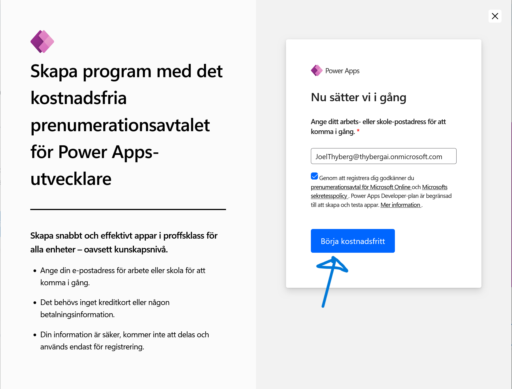
När du registrerat dig skickas du vidare till Power Apps startsida.
Om du skickas direkt vidare utan att behöva fylla i något betyder det att du redan har licensen aktiverad sen tidigare. Det är inga problem, gå bara vidare till Steg 2.
Steg 2: Kontrollera och välj miljö
Nu ska vi se till att din nya miljö finns tillgänglig och välja den. Detta gör vi direkt inifrån Power Apps.
- Titta uppe i högra hörnet på sidan. Klicka på väljaren för Miljö (där ditt namn eller ett miljönamn står).
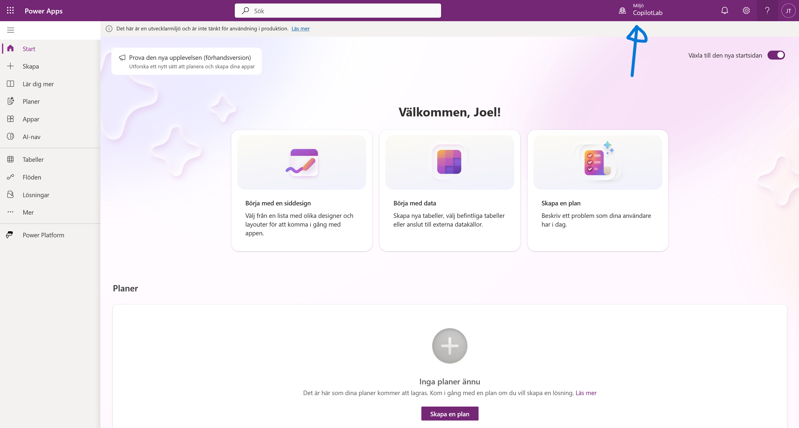
2. En lista fälls ut. Titta under rubriken App skapad med Dataverse. Där ska din utvecklingsmiljö ligga. Klicka på den för att välja den.Viktigt om namngivning: I mina screenshots heter miljön "CopilotLab". Din miljö kommer troligen heta "[Ditt Namn]s miljö".
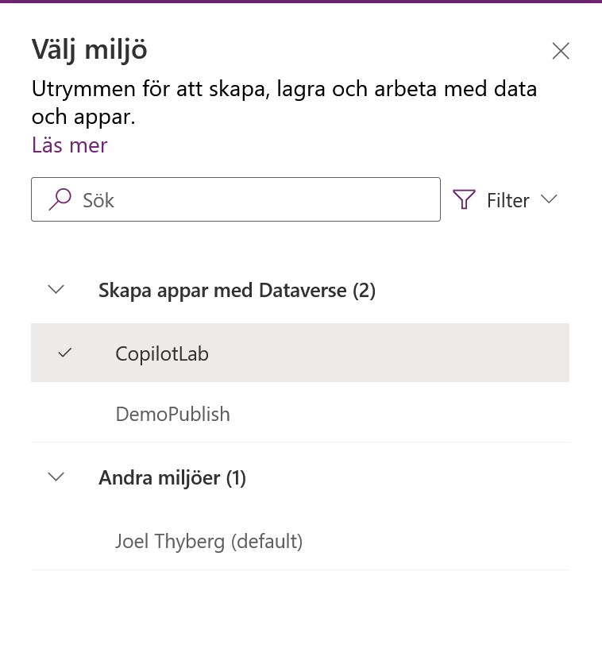
Om du redan hade en utvecklingsmiljö sedan tidigare kommer systemet inte skapa en ny, utan du använder bara den gamla. Det viktiga är att miljön du väljer ligger under rubriken App skapad med Dataverse och inte under "Andra miljöer".Steg 3: Verifiera Dataverse
Nu gör vi ett snabbt test för att se att databasen (Dataverse) är installerad och fungerar.
- Se till att du står i din nya miljö (enligt Steg 2).
- Klicka på AI-nav i menyn längst till vänster.
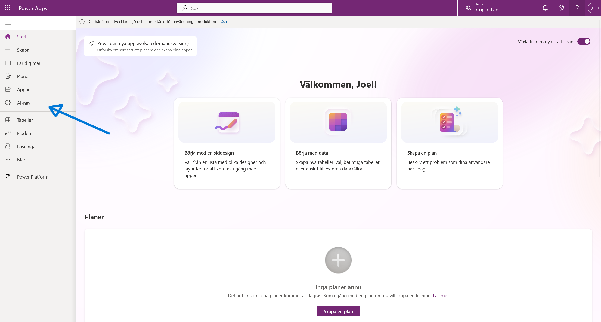
3. Titta på resultatet:✅ Det ser ut så här (Succé):
Du ser en sida med rutor för "AI-modeller", "Promptar" eller en lista. Inga felmeddelanden.
 Grattis! Din miljö är redo. Du kan gå vidare till nästa kapitel.
Grattis! Din miljö är redo. Du kan gå vidare till nästa kapitel.
❌ Det ser ut så här (Fel):
Du möts av en bild på en burk och texten "Ingen databas hittades".

🛑 Felsökning
Jag fick "Ingen databas hittades" i Steg 3? Då har du troligen valt fel miljö (t.ex. Standardmiljön) eller så har installationen av din Developer-miljö inte blivit klar än.
- Dubbelkolla i menyn Miljö (uppe till höger) att du INTE är i "(standard)".
- Om du är i rätt miljö men ändå får felet: Vänta 5-10 minuter och uppdatera sidan (F5). Ibland tar det en stund för databasen att skapas första gången.
Jag får felmeddelande när jag försöker signa upp i Steg 1? Om din IT-avdelning har blockerat detta får du använda din Standard-miljö. OBS: Meddela kursledaren om du måste göra detta.
1. Förbered SharePoint
Vår IT support agent behöver data för att kunna svara på frågor. Vi ska nu skapa en SharePoint-sajt som innehåller information om hårdvara (Laptops, skärmar etc.).
För att spara tid använder vi en färdig mall från Microsoft.
Steg 1: Gå till SharePoint
Vi navigerar dit direkt från Power Apps.
- Klicka på Våfflan (Appstartaren) bestående av 9 prickar högst upp i vänstra hörnet.
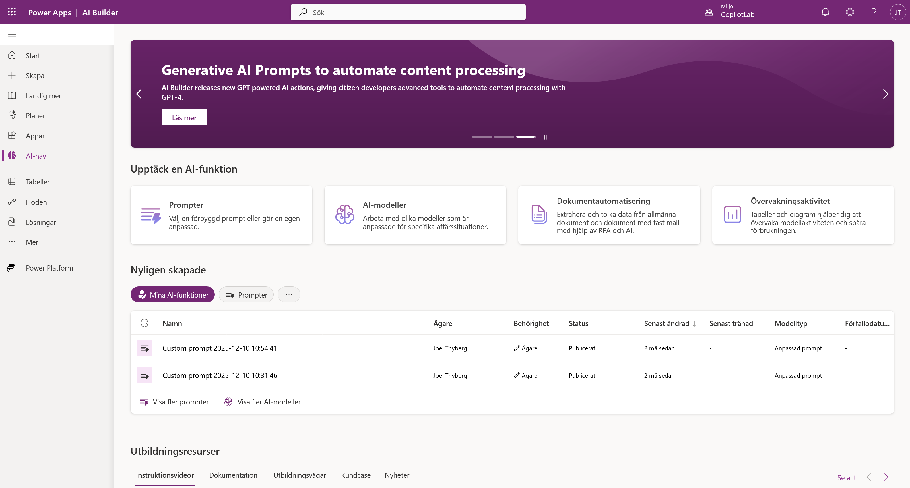
2. I menyn som fälls ut, klicka på SharePoint.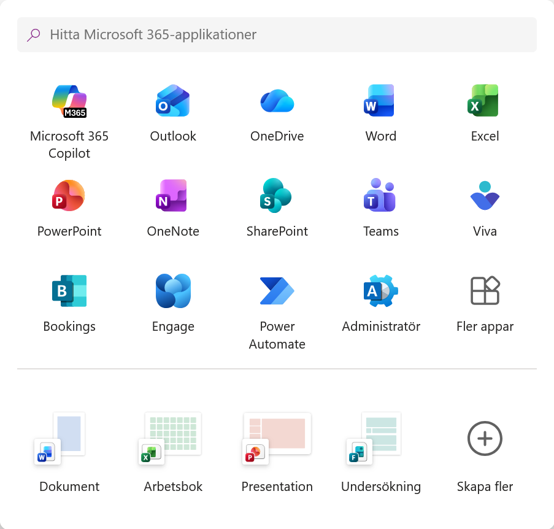
3. Du hamnar nu på startsidan för SharePoint. Klicka på + Skapa webbplats.
Steg 2: Välj mallen "IT Supportavdelning"
Nu ska vi välja rätt mall.
- Du får två val. Välj Gruppwebbplats.
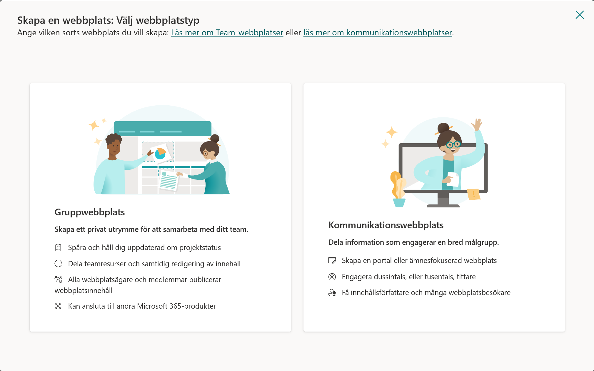
2. Klicka på fliken Mallar högst upp. 3. Scrolla ner och klicka på rutan för IT Supportavdelning.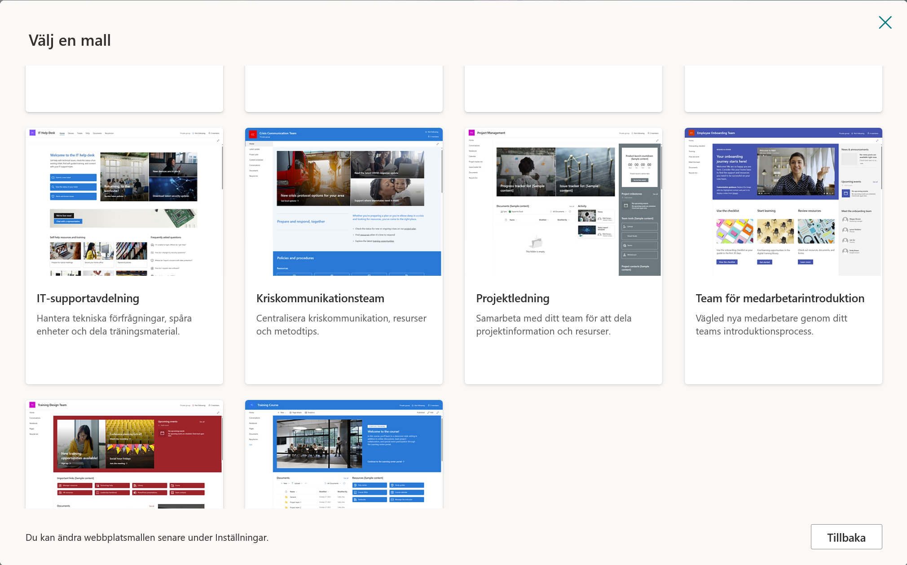
4. Klicka på knappen Använd mall.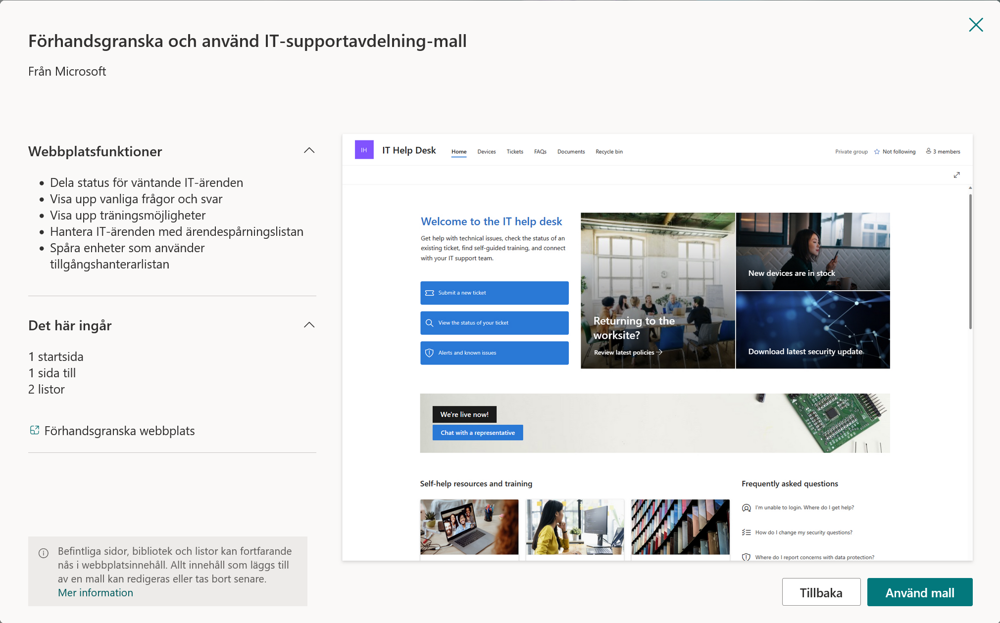
(Om du inte ser mallen, kontakta kursledaren för instruktioner om hur man skapar listan manuellt).
Steg 3: Konfigurera namn och språk
Nu ska vi döpa sajten och välja språk.
- Webbplatsnamn: Döp den till
IT Supporten. - Webbplatsbeskrivning: (Valfritt) Skriv en kort beskrivning om du vill.
- Klicka på knappen Nästa.
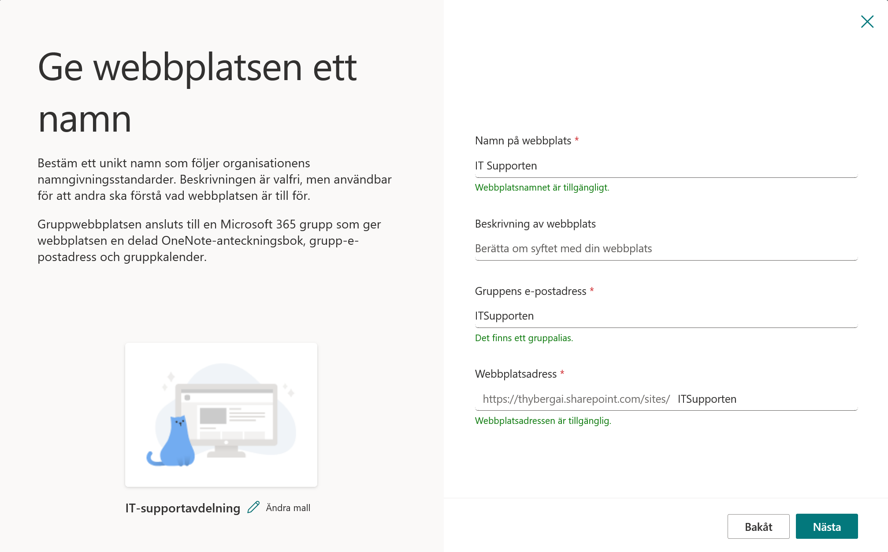
4. Nu får du välja språk. Välj Svenska.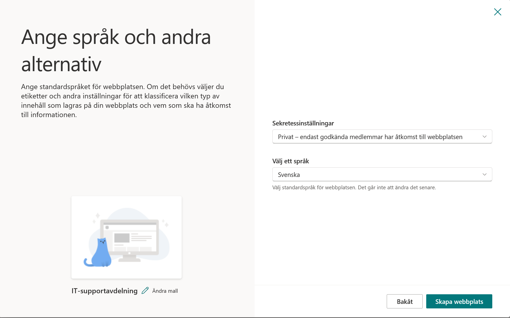
!!! info "Språkval"
Eftersom vi kör med svenskt gränssnitt i den här versionen av kursen väljer vi Svenska här. Kolumnnamnen i SharePoint-listan kommer då heta saker som Enhetstyp istället för DeviceType. Instruktionerna i resten av kursen är anpassade för detta.
5. Klicka på Skapa webbplats.
Vänta några sekunder medan sajten skapas... 6. När sajten är skapad kommer en ruta där du kan lägga till medlemmar. Vi behöver inte göra det nu. Klicka bara på Slutför.
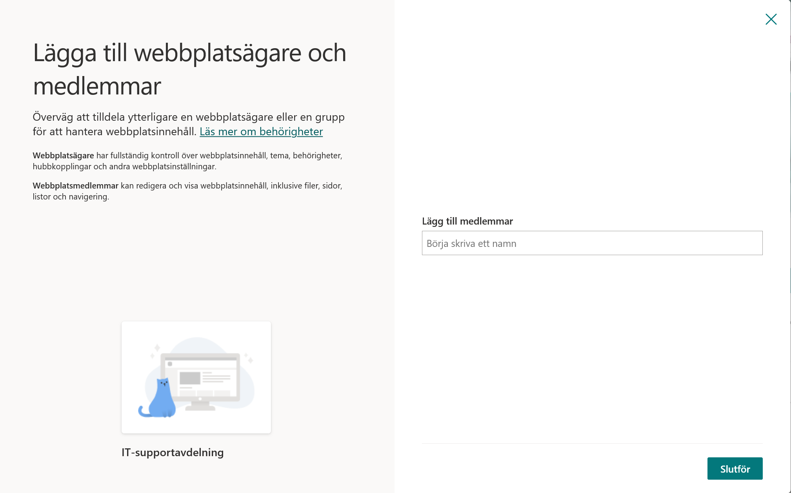
Du skickas nu automatiskt till den nya sajten.
Steg 4: Anpassa listan "Enheter"
Mallen har skapat en lista åt oss som heter Enheter, men vi behöver lägga till bilder på produkterna.
- På din nya sajt, klicka på fliken Enheter i toppmenyn (eller under "Webbplatsinnehåll").
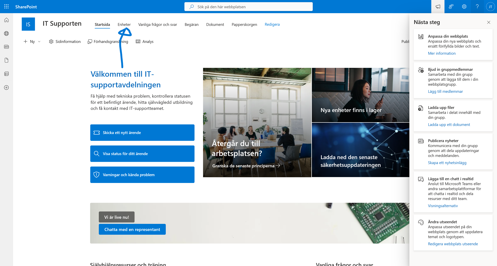
2. Scrolla längst till höger i listan tills du ser knappen + Lägg till kolumn. Klicka på den.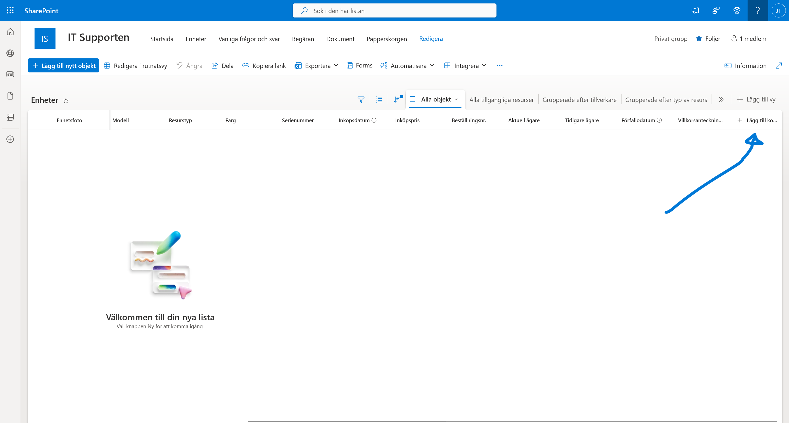
3. I menyn som dyker upp, scrolla ner och välj Hyperlänk.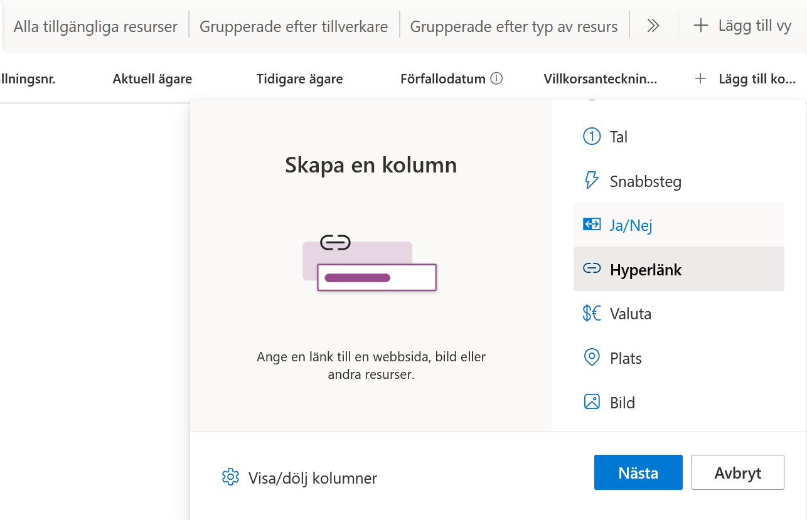
4. Döp kolumnen tillBild.
5. Klicka på Spara.
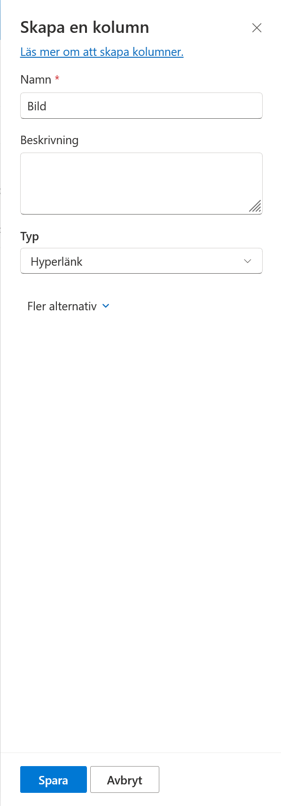
!!! info "Varför gör vi detta?" För att vår AI-agent ska kunna visa bilder i chatten behöver den en direktlänk (URL) till bilden. Det inbyggda bildfältet i SharePoint är svårt för agenten att läsa, så vi skapar en enkel länkkolumn istället.
Steg 5: Lägg in testdata
Nu ska vi fylla listan med 4 produkter.
- Klicka på knappen + Lägg till nytt objekt (eller Nytt) uppe till vänster i listan.
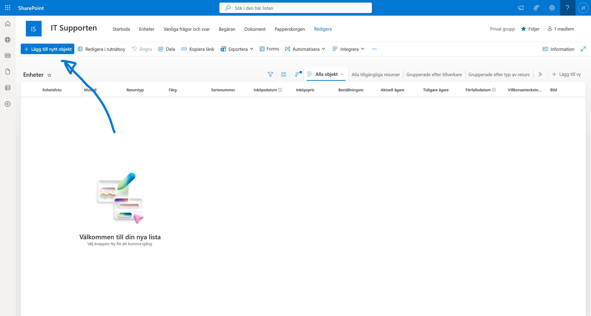
2. En ruta öppnas till höger. Här fyller du i informationen för produkten (se tabellerna nedan).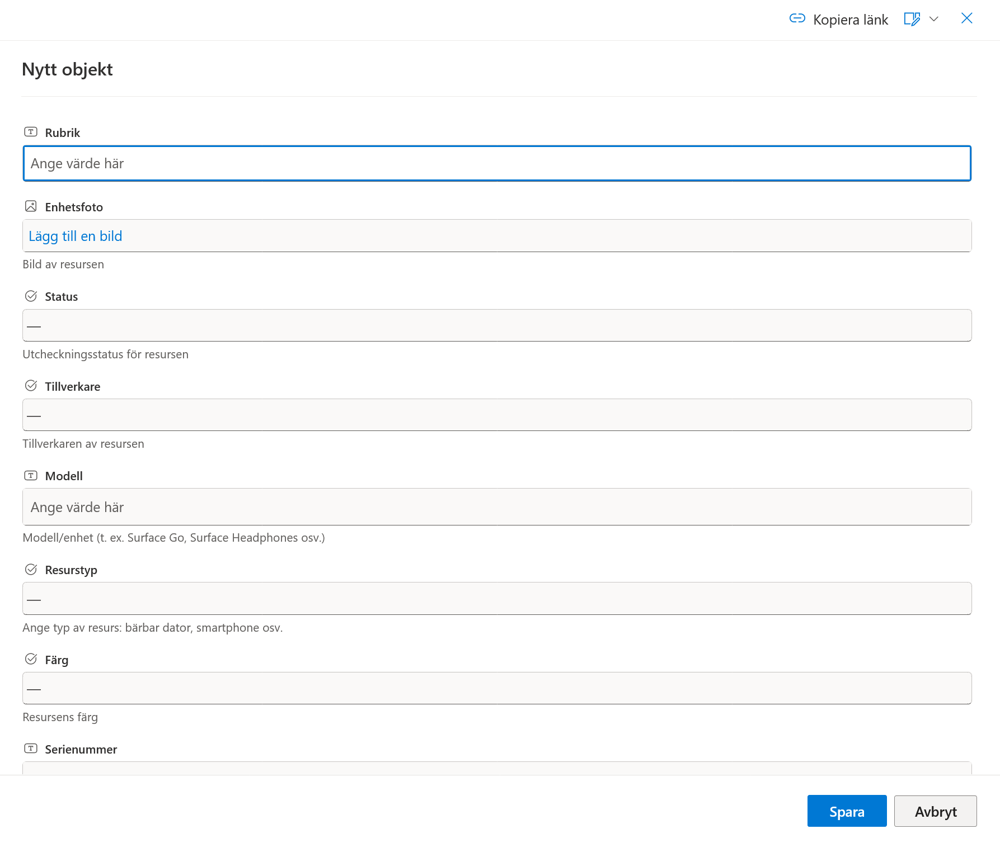
Viktigt om bilder
Lämna fältet 'Device photo' tomt! Vi ska inte ladda upp några filer.
Gör istället så här: 1. Scrolla ner i formuläret till fältetImage (som vi skapade i förra steget). 2. Kopiera länken (URL:en) från rutan under respektive produkt här nedanför. 3. Klistra in den i Image-fältet i SharePoint.
1. Surface Laptop 13

- Rubrik: Surface Laptop 13
- Status: Available
- Tillverkare: Microsoft
- Modell: Surface Laptop 13
- Resurstyp: Laptop
- Färg: Silver
- Serienummer: 1
- Inköpspris: 1500
- Beställningsnr: 10001
- Bild:
https://tyto-official.github.io/copilot-studio-course/assets/standard/images/products/surface-laptop-13.png
2. Surface Laptop 15

- Rubrik: Surface Laptop 15
- Status: Available
- Tillverkare: Microsoft
- Modell: Surface Laptop 15
- Resurstyp: Laptop
- Färg: Black
- Serienummer: 2
- Inköpspris: 2000
- Beställningsnr: 10002
- Bild:
https://tyto-official.github.io/copilot-studio-course/assets/standard/images/products/surface-laptop-15.png
3. Surface Studio

- Rubrik: Surface Studio
- Status: Available
- Tillverkare: Microsoft
- Modell: Surface Studio
- Resurstyp: Desktop
- Färg: Silver
- Serienummer: 3
- Inköpspris: 2500
- Beställningsnr: 10003
- Bild:
https://tyto-official.github.io/copilot-studio-course/assets/standard/images/products/surface-studio.png
4. Surface Pro

- Rubrik: Surface Pro
- Status: Available
- Tillverkare: Microsoft
- Modell: Surface Pro
- Resurstyp: Tablet
- Färg: Pink
- Serienummer: 4
- Inköpspris: 1000
- Beställningsnr: 10004
- Bild:
https://tyto-official.github.io/copilot-studio-course/assets/standard/images/products/surface-pro-12.png
Klart!
Nu har du en databas fylld med hårdvara. I nästa kapitel ska vi börja bygga själva agenten!